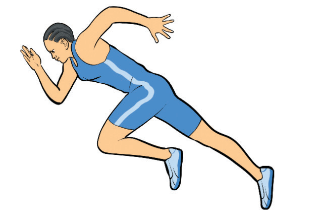

Other equipment includes a stopwatch, wind gauge and wind sock, spike, hand-brush, recording sheet, bucket/hose/watering cane.
Fundamental skills in the long jump
To achieve maximum jumping distance, an athlete must have the fundamental skills of the long jump. Since it is a speed-based event, jumpers must be proficient in four fundamental skills, which are approach run, take-off, flight, and landing.
Approach run
The approach run is vital for building momentum and ensuring precise placement on the take-off board. A well-coordinated approach run helps jumpers gain speed while maintaining control and accuracy for take-off. The following steps will help you practice the approach run:
- (i) From the long jump-starting position, start your run with your take-off foot forward and build up speed gradually as shown in Figure 2.18;
- (ii) Maintain your head in a natural position;
- (iii) Look forward all the time while keeping your back flat;
- (iv) Extend your take-off leg and place the thigh of the non-take-off foot in a good position; and
- (v) Ensure the last two strides are long enough to prepare you for take-off.

Take-Off
The take-off begins in the later phase of the approach run. During the last two strides of the approach run, the athlete sinks and raises their hips into the take-off point. The following steps will help you execute a take-off: